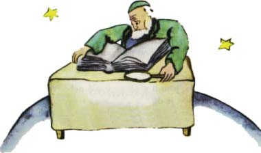

"Ale hleïme, badatel!" zvolal, kdy¾ spatøil malého prince.
Malý princ se posadil na stùl a byl trochu udýchán. Tolik se u¾ nacestoval!
"Odkud pøichází¹?" zeptal se ho starý pán.
"Co to je za tlustou knihu?" øekl malý princ. "Co tu dìláte?"
"Jsem zemìpisec," odpovìdìl starý pán.
"Co je to zemìpisec?"
"To je vìdec, který ví, kde jsou moøe, veletoky, mìsta, hory a pou¹tì."
"Opravdu moc zajímavé," øekl malý princ. "Koneènì opravdové zamìstnání!" A rozhlédl se kolem sebe po zemìpiscovì planetì. Je¹tì nikdy nevidìl tak vzne¹enou planetu.
"Va¹e planeta je moc hezká. Jsou tu oceány?"
"To nemohu vìdìt," øekl zemìpisec.
"Ach!" (Malý princ byl zklamán.) "A hory?"
"To nemohu vìdìt," odpovìdìl zemìpisec.
"A mìsta a øeky a pou¹tì?"
"To také nemohu vìdìt," øekl zemìpisec.
"V¾dy» jste zemìpisec!"
"Ov¹em," øekl zemìpisec, "ale nejsem badatel. A nemám ¾ádné badatele. Zemìpisec nikdy nepoèítá mìsta, øeky, hory, moøe, oceány a pou¹tì. Zemìpisec je pøíli¹ dùle¾itý, ne¾ aby se mohl toulat... Neopou¹tí svùj psací stùl, ale pøijímá náv¹tìvy badatelù. Vyptává se jich a zapisuje jejich vzpomínky. A kdy¾ se zdají vzpomínky nìkterého nich zajímavé, dá vy¹etøit mravní úroveò toho badatele."
"Naè to?"
"Proto¾e badatel, který by lhal, zpùsobil by v zemìpisných knihách hotové katastrofy. A také badatel, který by pøíli¹ pil."
"Jak to?" zeptal se malý princ.
"Proto¾e opilci vidí dvojmo. Zemìpisec by pak mohl zaznamenat dvì hory, kde je jen jedna."
"Znám nìkoho," øekl malý princ, "kdo by byl ¹patným badatelem."
"To je mo¾né. Kdy¾ se tedy zdá mravní úroveò badatele dobrá, jeho objev se pøezkou¹í."
"Jde se tam nìkdo podívat?"
"Ne, to je pøíli¹ slo¾ité. Ale po¾aduje se od badatele, aby podal dùkazy. Objeví-li napøíklad nìjakou velkou horu, musí odtamtud pøinést velké kameny."
Zemìpisec se náhle rozohnil.
"Ale ty pøichází¹ zdaleka! Ty jsi badatel! Popi¹ mi svou planetu!"
A zemìpisec si rozevøel knihu záznamù a oøezal tu¾ku. Vypravování badatelù se zaznamenávají nejprve tu¾kou. Inkoustem se zapí¹í, teprve a¾ badatel podá dùkazy.
"Tak povídej!" vyzval ho zemìpisec.
"Ó, u mne doma to není moc zajímavé," øekl malý princ, "je to tam docela malinké. Mám tøi sopky. Dvì jsou v èinnosti a jedna je vyhaslá. Ale èlovìk nikdy neví."
"Èlovìk nikdy neví," opakoval zemìpisec.
"Mám také kvìtinu."
"My nezaznamenáváme kvìtiny," øekl zemìpisec.
"A proè? To je to nejhezèí!"
"Proto¾e kvìtiny jsou pomíjející."
"Co to znamená pomíjející?"
"Zemìpisné knihy jsou nejcennìj¹í ze v¹ech knih," øekl zemìpisec. "Nikdy nevyjdou z módy. Stane se velmi zøídka, aby hora zmìnila místo. Velmi zøídka také vyschne oceán. Pí¹eme o vìcech trvajících vìènì."
"Ale vyhaslé sopky se mohou probudit k èinnosti," pøeru¹il ho malý princ.
"Co to znamená pomíjející?"
"To je nám jedno, jsou-li sopky vyhaslé nebo èinné," øekl zemìpisec. "Pro nás je dùle¾itá hora. Ta se nemìní."
"Ale co to znamená pomíjející?" opakoval malý princ, nebo» se jak¾iv nevzdal otázky, kdy¾ ji jednou dal.
"To znamená nìco, èemu hrozí blízký zánik."
"Mé kvìtinì hrozí blízký zánik?"
"Ov¹em."
Má kvìtina je pomíjející, øekl si malý princ, a má jen ètyøi trny na obranu proti svìtu. A já jsem ji nechal doma úplnì samotnou!
Tu se v nìm poprvé ozvala lítost. Ale znovu si dodal odvahy.
"Co mi radíte, abych teï nav¹tívil?" zeptal se.
"Planetu Zemi," odpovìdìl zemìpisec. "Má dobrou povìst..."
Malý princ ode¹el a myslel na svou kvìtinu.